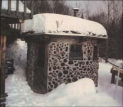

The Earthwood sauna has a 9' inside diameter, which translates to a 10', 4"" outside diameter. (1) High platform, 42"" off floor. (2) Low platform, 36"" off floor. (3) Ceramic thimble (8"" inside diameter) air vent. A cylindrical log end closes the vent. Vents are 5' and 6' off floor, respectively. (4) 4"" diameter combustion air inlet, near floor. (5) Stove surrounded by bricks (or stoned}. (6) Floor drain. (7) Forming boards. (8) Shelf. (9) Water-resistant (bathroom) light. (10) Spike for thermometer or towel. (11 ) 2'-wide door. (12) 16""-square window. (13) Wash bucket. (14) Whisk. (15) Firewood store.